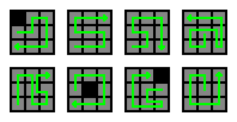
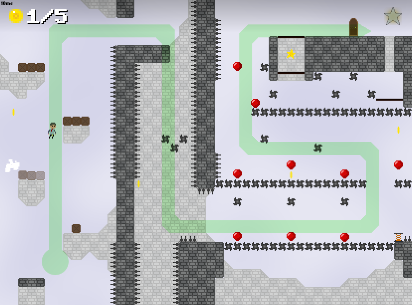

Early on in my paper designs, I found myself feeling that the levels I had designed all blended together. Individual obstacles and challenges stood out, but levels as a whole had less impact that I would have liked. I decided to take a look at what I could do to set levels apart at a glance, and here's what I came up with:
Each level in Business Bob is designed such that the path a player takes through the level forms its own unique shape. I felt that this kind of approach helped distinguish the levels in a very visual sense and got rid of a lot of the “always go to the right” feeling of uniformity present in many platformers. Now a level could be much more easily recognized by its thematic layout, eg "the one where I jump down a hole then climb back up", or just by a very intuitive shape-recognition, eg "the one that's shaped like a U".

Examples of some level flow visualizations. These diagrams helped to quickly catch overly-similar level layouts (eg #2 and #3 above) early on in concepting.
To visualize these level flows and ensure they each felt distinct, I considered each level as a 3x3 grid, and mapped the player's traversal through the default path of the level onto the grid. I did this very early in the paper design stages so that I could tweak level designs before implementation to have a unqiue "macro flow" compared to each of the other levels.

A flow visualization overlaid on its corresponding level.